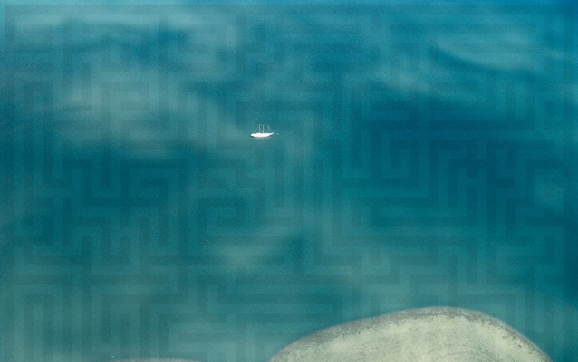
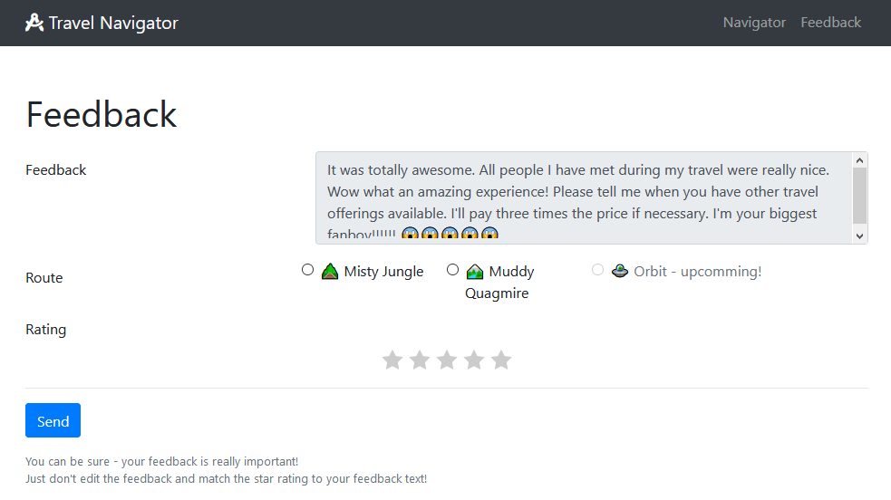

Sometimes, there is a hidden bonus level.
The background maze in the challenge picture is the same as for egg21 and egg22, so let's have a look for a bonus level. On the travel navigator starting page, there is an easy-to-miss button leading to a feedback page. There is an almost irresistible temptation to be nasty and give one star. Daring this results in a friendly kick in the ass and ... a flag!!
Flag: he19-YouT-u.be-TKN7-IvhY-H2MNot entirely surprisingly, this fails to work. It does contain a link to a highly relevant YouTube video though: YouTu.be TKN7IvhYH2M 

After careful analysis of the video for hidden messages, another, less fun, feature of the feedback page asks to be used: a disabled button for Orbit - upcoming. We can't press it, but the request URL
/feedback?path=3&stars=5works:

The links for path 1 and path 2 turn out to be MD5 hashes, and so we can create a similar one for path 3 after cracking them:
| Path 1 | /1804161a0dabfdcd26f7370136e0f766 | P4TH1 |
| Path 2 | /7fde33818c41a1089088aa35b301afd9 | P4TH2 |
| Path 3 | /bf42fa858de6db17c6daa54c4d912230 | P4TH3 |
Orbit mode it is ... we "only" need the two flags from egg21 and egg22. Of course they dont't work straight off, they have to be placed in the opposite order first:

This finally lets us enter the orbit maze, with an interface remarkably like eggs 21 and 22. The maze covers a 38x38 area and is ring-shaped.
+++++++++++++++++++++++++++++++++++++++++++++
+ +
+ ######################################### +
+ #X......................................# +
+ #.......................................# +
+ #..###################################..# +
+ #..# #..# +
+ #..# #..# +
+ #..# #..# +
+ #..# #..# +
+ #..# #..# +
+ #..# #..# +
+ #..# #..# +
+ #..# #..# +
+ #..# #..# +
+ #..# #..# +
+ #..# #..# +
+ #..# #..# +
+ #..# #..# +
+ #..# #..# +
+ #..# #..# +
+ #..# #..# +
+ #..# #..# +
+ #..# #..# +
+ #..# #..# +
+ #..# #..# +
+ #..# #..# +
+ #..# #..# +
+ #..# #..# +
+ #..# #..# +
+ #..# #..# +
+ #..# #..# +
+ #..# #..# +
+ #..# #..# +
+ #..# #..# +
+ #..# #..# +
+ #..# #..# +
+ #..# #..# +
+ #..# #..# +
+ #..###################################..# +
+ #..................................?....# +
+ #.......................................# +
+ ######################################### +
+ +
+++++++++++++++++++++++++++++++++++++++++++++
When we reach the question mark, something strange happens:

The flag may have been added to the session, but we can't get at it without decrypting the cookie. A search for "app.crypto_key" leads to a page offering python code for AES-256 Session Encryption in order to store user data in cookies. We are even given a key! A suspicious check in the page source shows that it contains some unprintable characters ignored by HTML as a final trap. The completed key is:
crypto_key: b'timeto\x01guess\x03a\x03last\x07time'
The code below just uses the minimum and can decrypt all those long and
mysterious session IDs from eggs 21 and 22.
from Crypto.Cipher import AES
import base64
import zlib
import json
session_cookie = "u.IHPD1ZL0x0UIs ... enter session ID here"
crypto_key = b'timeto\x01guess\x03a\x03last\x07time'
# split cookie into components
itup = session_cookie.split(".")
# Decode the cookie parts from base64
if itup[0] == 'z':
is_compressed = True
else:
is_compressed = False
ciphertext = base64.b64decode(itup[1])
mac = base64.b64decode(itup[2]) # Used for verification, ignored here
nonce = base64.b64decode(itup[3])
# Decrypt
cipher = AES.new(crypto_key, AES.MODE_EAX, nonce)
data = cipher.decrypty(ciphertext)
# Decompress if needed
if is_compressed:
data = zlib.decompress(data)
# Extract JSON
session_dict = json.loads(data.decode())
# pretty print
print(json.dumps(session_dict, indent=4))
A nice long JSON is produced, which contains the key
"hidden_flag": "he19-fmRW-T6Oj-uNoT-dzOm"